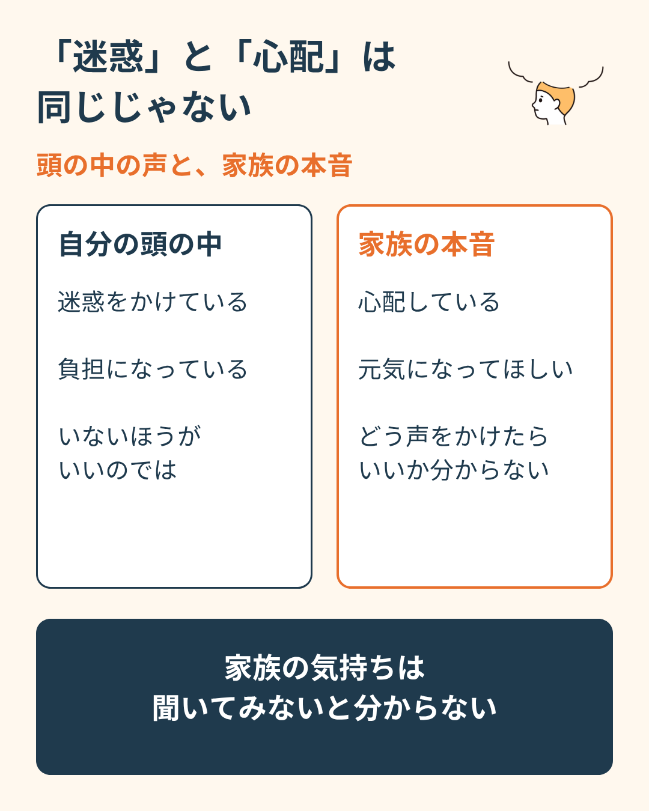
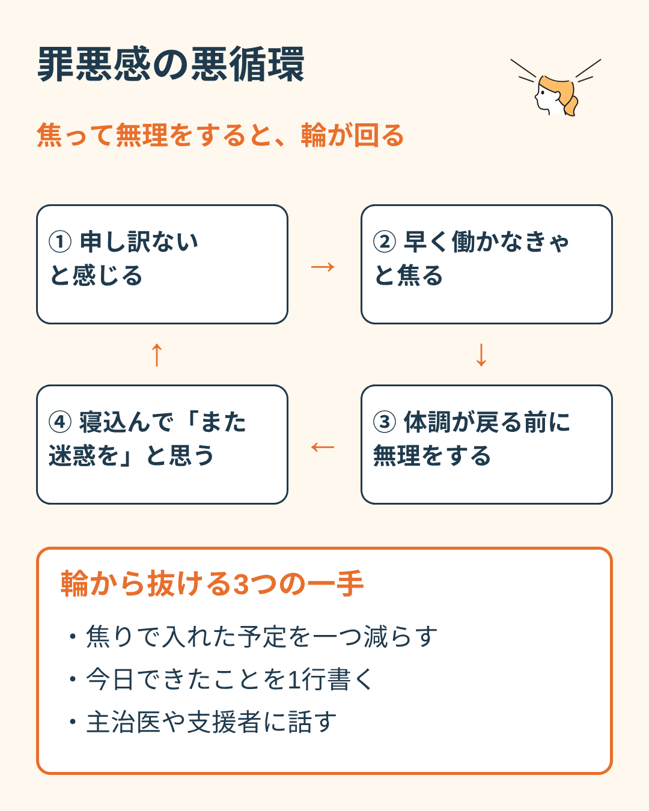
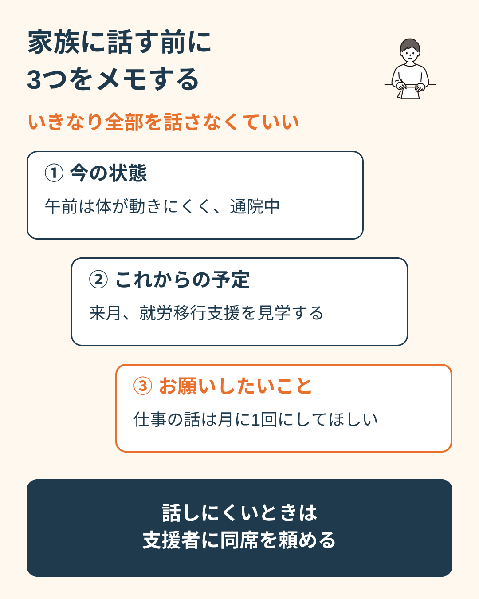
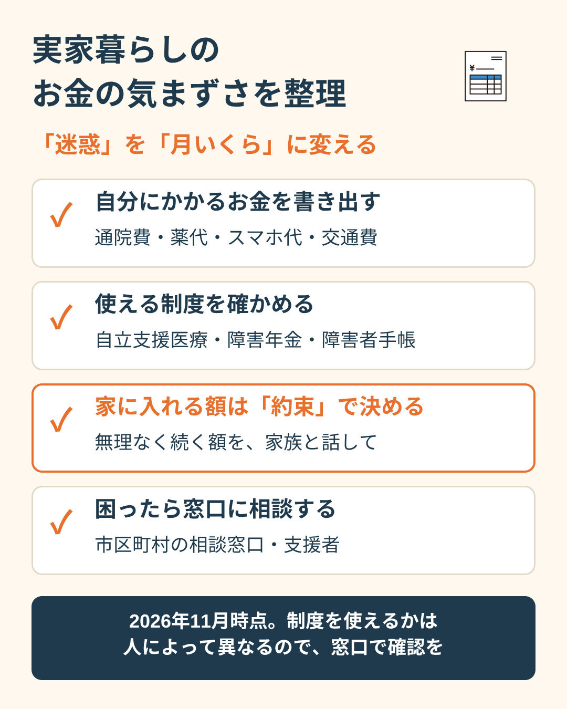
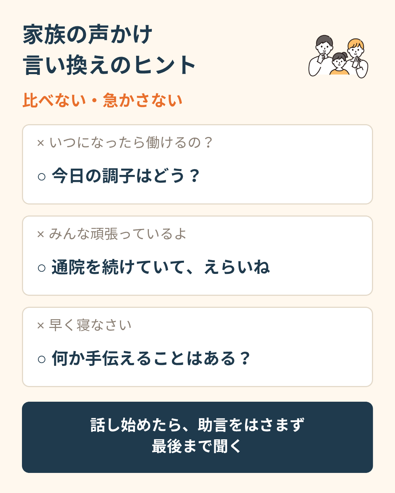

「迷惑をかけている」という感覚は、どこから来るのか
「家族に迷惑をかけている」という感覚は、多くの場合、「自分は役に立っていない」「同い年の人のように自立できていない」という自分への評価から生まれます。就労支援の現場で話を聞くと、きっかけは大きな出来事より、日常の小さな場面であることがほとんどです。親が朝早く仕事に出ていく音を布団の中で聞いたとき。親戚の集まりで、いとこの就職や結婚の話が出たとき。親が通帳を見てため息をついたように見えたとき。年金の通知や病院の領収書が机の上に置いてあったとき。そうした場面のたびに、「自分のせいだ」という言葉が頭の中で積み重なっていきます。
ここで知っておきたいのは、「迷惑をかけている」は、家族から聞いた言葉ではなく、自分の頭の中で作られた解釈であることが多いという点です。家族が感じているのは「心配」であって、「迷惑」とは限りません。心配と迷惑は、似ているようで中身が違います。心配は「元気になってほしい」「この先どうなるのか分からなくて不安」という気持ちで、迷惑は「いないほうがいい」「負担でしかない」という気持ちです。家族のため息は、あなたへの不満ではなく、自分の仕事の疲れや、どう声をかけていいか分からない戸惑いから出ていることもあります。

もう一つの背景は、「働いて家にお金を入れることが、家族の一員としての価値」という考え方です。この考え方を強く持っている人ほど、働けない時期の自分を責めやすくなります。けれども家族の中での役割は、お金を稼ぐことだけではありません。夕食の米を研いでおく、洗濯物を取り込む、祖父母の話し相手になる、ペットの世話をする。体調が悪い時期でもできる小さな役割は、家族の生活を確かに支えています。「役に立つかどうか」だけで自分の価値を測ると、体調が落ちている時期はどうしても点数が低くなってしまいます。
精神障害や発達障害のある方の中には、子どものころから「迷惑をかけないように」と言われて育ってきた方もいます。忘れ物が多い、場の空気が読めない、疲れやすいといった特性で叱られることが多かった経験があると、大人になっても「また迷惑をかけた」と考える癖が残りやすいと言われます。罪悪感の強さは、あなたの性格の弱さではなく、これまでの経験の積み重ねでもあります。
「親戚の集まりのあと、母が台所で黙って洗い物をしていて、自分のせいで恥をかかせたと思い込んでいました。何か月もたってから聞いたら、母は『あの日は叔母に言われたことに腹が立っていただけ。あなたのことは心配だけど、恥ずかしいなんて思ったことはない』と。聞くまで、ずっと一人で責めていました。」
罪悪感が回復の足を引っぱる悪循環と、ほどく一手
罪悪感は、うまく使えば「次はこうしよう」と行動を変える力になります。けれども強くなりすぎると、回復そのものを邪魔するようになります。就労支援の現場でよく見るのは、次のような流れです。「申し訳ない」と感じる→早く働かなきゃと焦る→体調が戻りきる前に求人に応募したり、無理に予定を詰めたりする→疲れが出て寝込む→「やっぱり自分はだめだ」「また迷惑をかけた」と、さらに申し訳なくなる。この輪を何周も回るうちに、外に出ること自体が怖くなっていきます。

この悪循環には、いくつかのサインがあります。家族と同じ部屋にいるのがつらく、食事の時間をずらすようになった。親の帰宅時間が近づくと動悸がする。「今日は何をしていたか」を聞かれないよう、出かけるふりをして外で時間をつぶしている。求人サイトを見ては閉じることを1日に何度も繰り返している。こうした状態が2週間以上続いているなら、気持ちの持ち方だけで抜け出すのは難しい段階かもしれません。主治医や支援者に、そのまま伝えてください。
悪循環から抜けるときに大事なのは、「罪悪感をなくす」ことではなく、罪悪感に押されて動く量を減らすことです。おすすめしている一手は3つあります。
- 焦りで入れた予定を一つ減らす（今週の面接を来週にする、毎日の求人チェックを週2回にする）
- 寝る前に「今日できたこと」を1行だけ書く（例：昼前に起きた、洗濯物をたたんだ、主治医の予約を入れた）
- 「申し訳なさで動けない」と、主治医・支援者・カウンセラーのだれか一人に話す
「今日できたこと」の記録は、自分を励ますためだけのものではありません。2週間分たまると、「午後なら動ける日が増えてきた」「通院の翌日は寝込みやすい」といった体調の波が見えてきます。これは、あとで家族に今の状態を説明するときや、働き始める時期を主治医と相談するときの材料にもなります。罪悪感を手放すことは、甘えることではありません。今の自分の状態を正確に知ることが、次に動くための出発点になります。
「働けない」こと自体の罪悪感については、「働きたくない」と思うことへの罪悪感を扱った記事や、体が動かないつらさを書いた慢性疲労症候群で働けない罪悪感の記事でも取り上げています。
家族と話せないときの「話し方」と、間に入ってもらう方法
「心配をかけて申し訳ない」と思っているのに、実際には家族と体調や仕事のことをほとんど話せていない、という方はとても多いです。話そうとすると責められそうな気がする、うまく説明できる自信がない、話したら泣いてしまいそう。理由はさまざまですが、話さないままでいると、家族は想像で埋めるしかなくなります。家族の想像は、多くの場合、本人の実際の状態より悪い方向に膨らみます。その結果、心配の声かけが増え、本人はさらに話しにくくなる、というすれ違いが起きます。
いきなり全部を話そうとしなくて大丈夫です。話す前に、次の3つを紙やスマホのメモに書いておくと、言葉に詰まりにくくなります。

「いまは午前中に体が動きにくくて、通院を続けながら様子を見ているところ（今の状態）。来月、主治医と相談して就労移行支援の見学に行ってみようと思っている（これからの予定）。仕事のことは月に1回まとめて話すから、毎日は聞かないでもらえると助かる（お願い）。」
ポイントは、3つ目の「お願い」です。家族が毎日「仕事はどうするの」と聞いてくるのは、多くの場合、本人の予定が分からなくて不安だからです。「いつ、どのくらい話すか」を本人から提案すると、家族も待ちやすくなります。口に出すのが難しければ、メモを渡す、家族のグループチャットに送る、手紙にするといった形でもかまいません。
自分の口から説明するのが難しいときは、支援者に間に入ってもらう方法があります。就労移行支援事業所や相談支援事業所では、本人の同意のうえで家族との面談の機会を設けてくれるところがあります。主治医の診察に家族が同席して、病気の説明や今後の見通しを一緒に聞くこともできます（同席の可否は医療機関によって異なります）。本人から言われると反発してしまう親も、第三者から「いまは焦らず体調を整える時期です」と聞くと、受け止めやすくなることがあります。
支援者に頼むときは、「家族に何を伝えてほしいか」「何は伝えてほしくないか」を先に話しておきましょう。たとえば「通院していることは伝えていいが、病名は自分から話したい」といった線引きです。家族との関係そのものの悩みについては、障害のことで家族と関係が難しいときの付き合い方もあわせて読んでみてください。
「ずっと親に申し訳なくて、顔を見るのもつらかったです。支援員さんに面談に入ってもらって話したら、親は『怒ってない、元気になってほしいだけ』と言っていました。それからは月に1回、今の状態を紙に書いて渡しています。毎日聞かれることがなくなって、家の空気が少し軽くなりました。」
お金と実家暮らしの気まずさは、数字と制度で整理する
家族への罪悪感の中でも、特に重くのしかかりやすいのがお金のことです。「食費も通院代も親に出してもらっている」「同い年の友人は親に仕送りしているのに」。こうした気持ちは、金額がはっきりしないまま頭の中だけで考えていると、どんどん大きくなっていきます。お金の罪悪感は、気持ちで解決しようとするより、数字と制度で整理したほうが軽くなりやすいというのが、支援の現場での実感です。
最初の一歩は、「自分にかかっているお金」を一度書き出してみることです。通院費と薬代、スマホ代、交通費、食費の目安など、ざっくりで構いません。書き出してみると、「思っていたより少なかった」と感じる方もいれば、「使える制度で減らせる部分がある」と気づく方もいます。漠然とした「迷惑」が、具体的な「月いくら」に変わるだけで、家族と話せる話題になります。

使える制度は、障害の種類や状態、加入していた年金などによって変わります。ここでは代表的なものを挙げますが、受けられるかどうかは個別の条件で決まるため、必ず窓口で確認してください。
- 自立支援医療（精神通院医療）：精神科の通院や薬代の自己負担が、原則1割に軽くなる制度です。所得に応じて月の上限額もあります。申請は市区町村の窓口で、主治医の診断書が必要です。
- 障害年金：病気やけがで生活や仕事に支障がある場合に受け取れる年金です。初診日や保険料の納付状況、障害の程度などの条件があり、働いていても受け取れる場合があります。年金事務所や、障害年金を扱う社会保険労務士に相談できます。
- 障害者手帳：精神障害者保健福祉手帳などを持つと、税金の控除や、自治体によっては交通機関・公共料金の割引が受けられることがあります。内容は地域によって異なります。
- 暮らしやお金の相談窓口：生活に困っているときは、市区町村の自立相談支援の窓口で、家計の立て直しを一緒に考えてもらえる場合があります。
障害年金と働くことの関係については、障害年金を受給しながら働くことはできるかを整理した記事で詳しくまとめています。家計全体の見直しは障害のある方の家計管理の記事も参考になります。
障害年金や工賃などの収入がある方の中には、「少しでも家にお金を入れたい」と考える方もいます。そのときは、金額の大きさより、無理なく続けられる額を、家族と話して決めることが大切です。たとえば「毎月1万円を、年金が入った月の翌週に渡す」「体調が悪くて働けない月は、話し合って額を見直す」といった約束です。続かない額を決めてしまうと、払えなかった月にまた罪悪感が強くなります。お金を入れられない時期でも、「家計の話に参加する」こと自体が家族の一員としての役割になります。
なお、親が高齢になってからの暮らしや、親亡きあとの不安を抱えている方もいるかもしれません。そうした長い先の心配は、一人で抱えず、相談支援事業所や障害者就業・生活支援センターなどで、家族も交えて少しずつ話していくことができます。いま全部を決める必要はありません。
家族の方へ。心配の言葉が「責める言葉」に聞こえるとき
この章は、障害や病気のある方を支えるご家族に向けて書いています。本人に「読んでみて」と渡してもらう使い方もできます。
本人が罪悪感でいっぱいになっているとき、家族の何気ない一言が、思っている以上に重く届くことがあります。「いつになったら働けるの」「みんな頑張っているよ」「お母さんも若いころは大変だった」。家族としては励ましや心配のつもりでも、本人には「早く働け」「頑張りが足りない」と聞こえてしまうことがあります。本人にとってつらいのは、言葉の中身より「比べられている」「急かされている」と感じることです。

家族ができることは、特別なことではありません。将来の話より今日の体調を尋ねる。できなかったことより、通院を続けている、家事を一つやったなど、していることに目を向ける。仕事の話をするタイミングを、本人と相談して決めておく。そして、本人が話し始めたときは、途中で助言をはさまず最後まで聞く。「聞いてもらえた」という経験が、本人の罪悪感を少しずつゆるめていきます。
本人を支える家族が、ひとりで不安を抱え込んでしまうことも少なくありません。各都道府県や政令指定都市にある精神保健福祉センターや、地域の保健所・保健センターでは、家族からの相談を受け付けているところがあります。病気の理解や接し方を学ぶ家族教室を開いている地域もあります。同じ立場の家族が集まる家族会では、「うちだけではない」と感じられることが支えになる、という声も聞きます。本人が支援機関を利用している場合は、本人の同意を得たうえで、家族として支援者に相談することもできます。
家族が本人に就労支援を勧めるときのすれ違いについては、家族に勧められて就労支援に来た方向けの記事も参考にしてください。
よくある質問
関連記事
家族にも言えない気持ちを、話してみませんか
「何から話せばいいか分からない」段階でも大丈夫です。mimemimeの無料相談は、今の状況の整理から一緒に始められます。ご家族からのご相談も受け付けています。
無料で話してみるこの記事に、聞いてみたいことはありますか？
「自分の場合はどうなんだろう」と思ったことを、気軽に書いてみてください。いただいた質問は個別にお返事したうえで、匿名で記事にすることがあります。
mimemime代表。就労支援の現場経験をもとに、障がいのある方の働く不安に寄り添う記事を執筆。